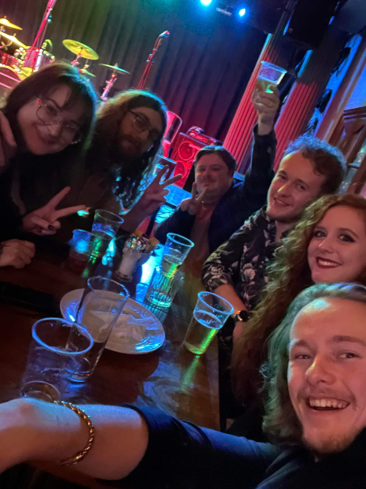

About Me

I am a 22-year-old with a passion for video gaming, reading, tabletop gaming and more... I am currently attending a software egineering course run by General Assembly, with a goal to become a full-stack web developer.
I successfully completed the Bronze Duke of Edinburgh Award in 2014 and took part in various outdoor survival courses. I used to be an active member of the Beavers, Cubs, Scouts and Explorer Scouts and used my scouting skills to take hikes or to camp outdoors, and to generally feel superior compared to any casual campers out there.
During my time at university, I spent a couple of months in the Sheffield University Officer Training Corps. Whilst there, I took part in training exercises involving live firearms, field tactis and leadership skills.
I used to be the prefect for computer science at my sixth-form, helping department staff out on induction days and open evenings by showing my knowledge in the field to any visitors.